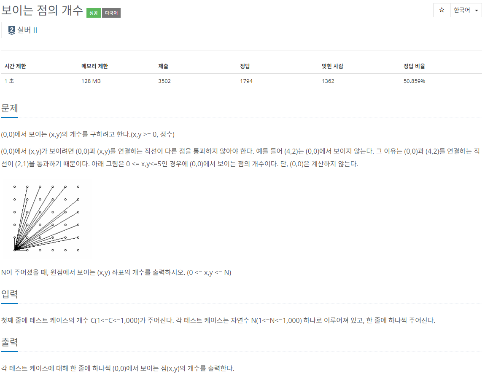

ALGORITHM
다양한 언어를 통해 해결한 프로그래밍 문제들을 소개합니다.
프로그래밍 문제 해결-백준 2725번(보이는 점의 개수)


최대공약수(GCD)
배열의 첫번째 값은 N이 1인 경우를 고려하여 3으로 초기화 - (1,0), (0,1), (0,0)이 1에서 보이는 좌표좌표를 탐색할 때 좌표 (x, y)에서 y가 x보다 큰 경우, 이미 이전에 해당 좌표를 탐색한 경우와
동일한 직선상에 위치하게 되기때문에 y는 y<=x만큼만 반복 했습니다.
보이는 점을 카운트 때는 최대공약수를 사용해서 각 좌표 (x,y)가 원점에서 보이는지 여부를 체크하고 카운트 했습니다.
그 이유는 주어진 점 (x, y)에서 원점을 보이기 위해서는 x와 y가 서로소여야 하는데 즉 최대공약수가 1이 되야만 합니다.
또한 좌표 (x, y)와 (-x, y)가 다른 좌표로 카운트되지 않도록 배열의 값을 더할때 카운트 된 값의 두배의 값을 더해줬습니다.